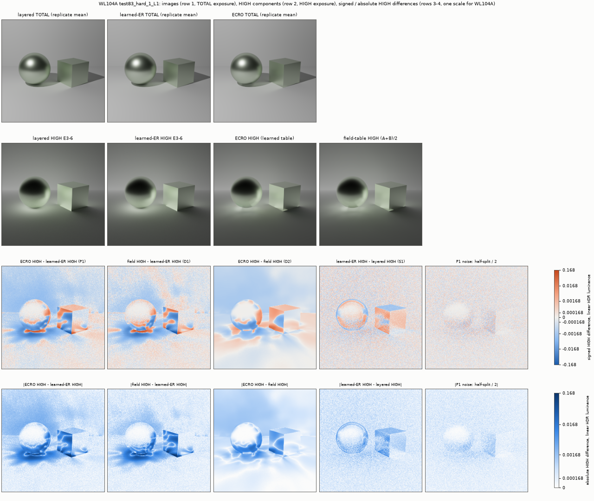
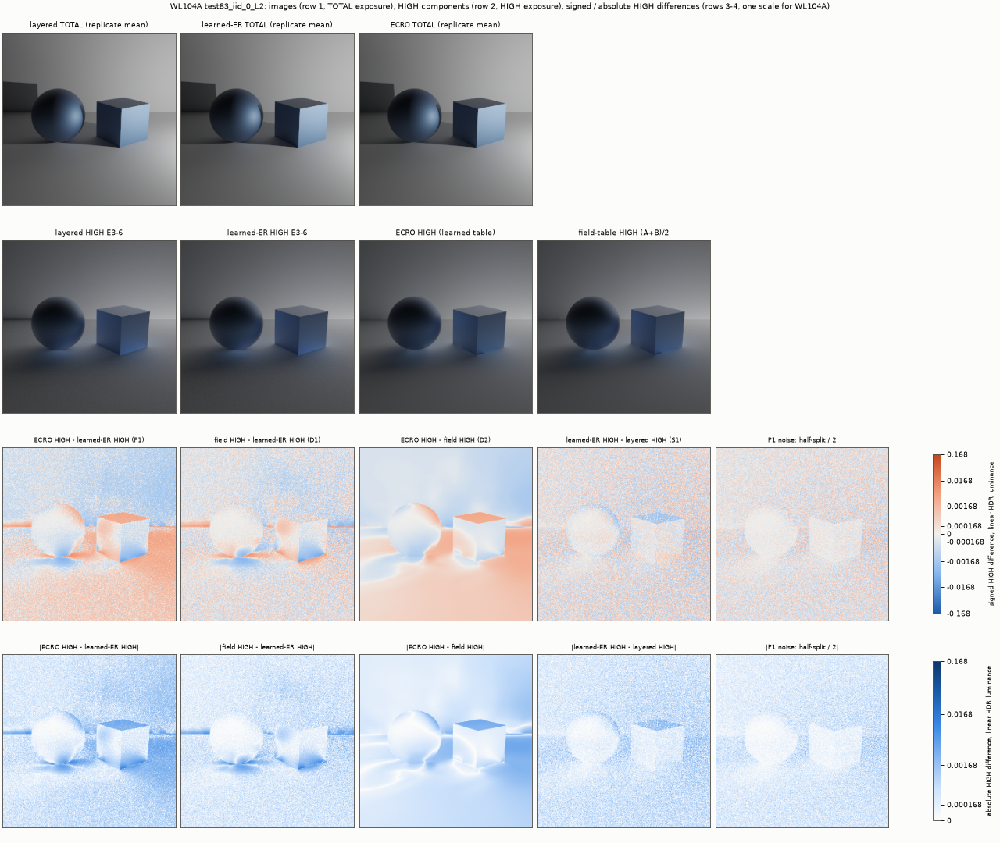
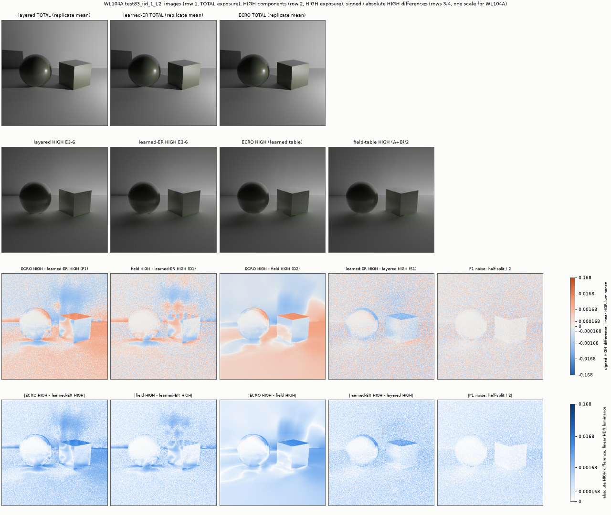
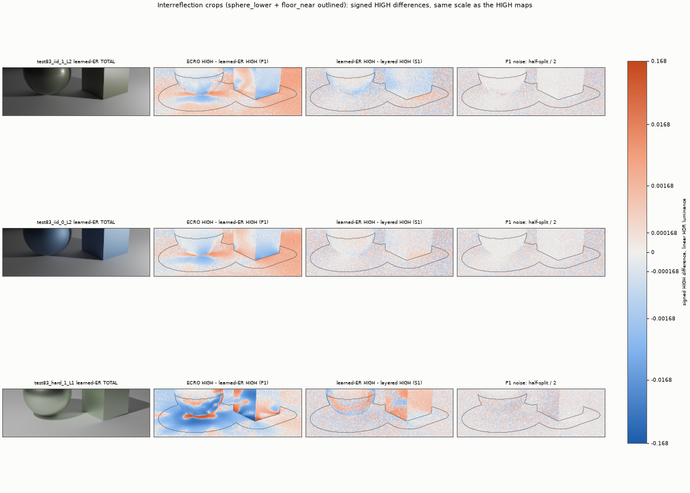
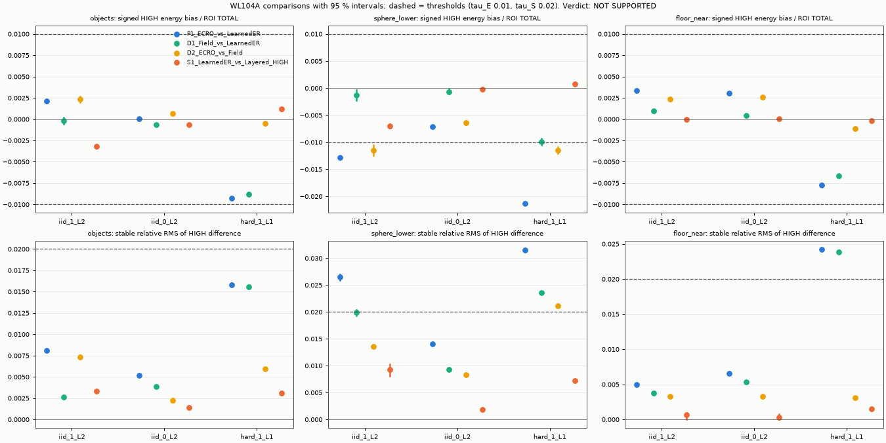

WL104A — ECRO HIGH vs its learned-ER source (verdict: NOT SUPPORTED)
Numbers: metrics.json. One difference scale (max 0.1681), logarithmic display.
high_maps_test83_hard_1_L1.png

high_maps_test83_iid_0_L2.png

high_maps_test83_iid_1_L2.png

interreflection_crops.png

intervals.png
